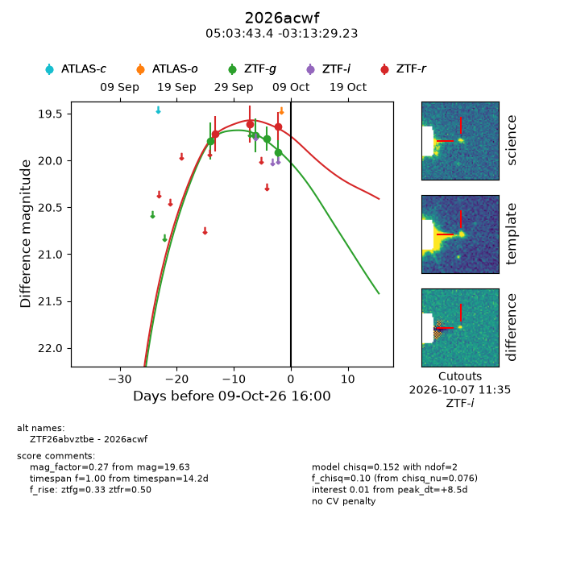
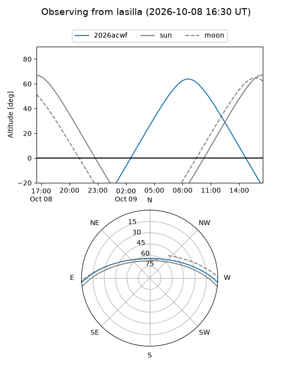
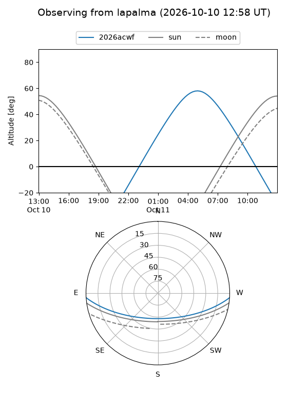
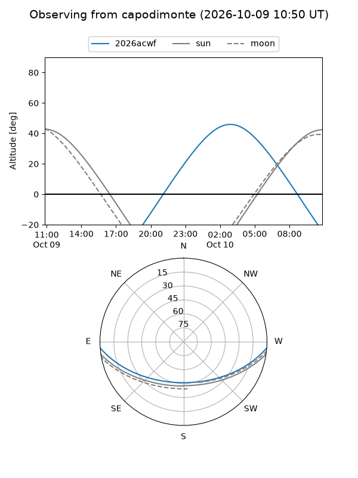
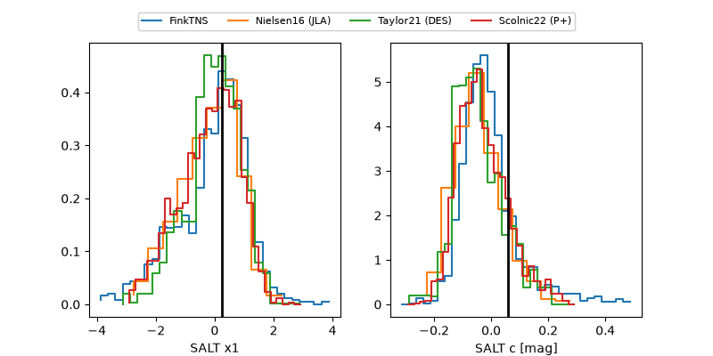

2026acwf
Target 2026acwf at 2026-10-09 16:01
Aliases and brokers:
FINK-ZTF: ztf.fink-portal.org/ZTF26abvztbe
Lasair-ZTF: lasair-ztf.lsst.ac.uk/objects/ZTF26abvztbe
ALeRCE-ZTF: alerce.online/object/ZTF26abvztbe
YSE-PZ: ziggy.ucolick.org/yse/transient_detail/2026acwf
TNS name: wis-tns.org/object/2026acwf
Direct TNS query: direct search
alt names
ZTF26abvztbe (ztf,fink_ztf)
2026acwf (tns,yse)
Coordinates:
equatorial (ra, dec) = 75.9307,-3.22479
equatorial (HMS+DMS) = 05:03:43.36,-03:13:29.23
galactic (l, b) = (202.9846,-25.34531)
Flags:
peak dt: +8.5
Photometry:
last ztfg=19.91, ztfr=19.63
4 ztfg, 3 ztfr detections
Lightcurve

Visibility



Additional plots
